Note
Go to the end to download the full example code.
2D Visualization: Sections and Custom Plots¶
A tour of gempy_viewer’s 2D plotting options
This tutorial builds a simple faulted model with topography and two custom sections,
then goes through the main plot_2d options: named sections, orthogonal cuts, the
geological-map view, scalar fields, and mixing different content per panel in one
figure. The last part covers retrieving the returned matplotlib figure and axes to
combine several plots into a custom figure, or draw custom data (e.g. a borehole) on
top of a section.
import numpy as np
import matplotlib.pyplot as plt
import gempy as gp
import gempy_viewer as gpv
np.random.seed(1234)
Model setup¶
The model below is the same simple fault model used throughout these tutorials: two fault blocks, each with the same four-layer stratigraphy.
data_path = 'https://raw.githubusercontent.com/cgre-aachen/gempy_data/master/'
geo_model = gp.create_geomodel(
project_name='tutorial_2d_visualization',
extent=[0, 2000, 0, 2000, 0, 750],
resolution=[100, 100, 40],
refinement=4,
importer_helper=gp.data.ImporterHelper(
path_to_orientations=data_path + "/data/input_data/getting_started/simple_fault_model_orientations.csv",
path_to_surface_points=data_path + "/data/input_data/getting_started/simple_fault_model_points.csv",
hash_surface_points="4cdd54cd510cf345a583610585f2206a2936a05faaae05595b61febfc0191563",
hash_orientations="7ba1de060fc8df668d411d0207a326bc94a6cdca9f5fe2ed511fd4db6b3f3526"
)
)
gp.map_stack_to_surfaces(
gempy_model=geo_model,
mapping_object={
"Fault_Series": 'Main_Fault',
"Strat_Series": ('Sandstone_2', 'Siltstone', 'Shale', 'Sandstone_1')
}
)
gp.set_is_fault(geo_model, ["Fault_Series"])
Surface points hash: 4cdd54cd510cf345a583610585f2206a2936a05faaae05595b61febfc0191563
Orientations hash: 7ba1de060fc8df668d411d0207a326bc94a6cdca9f5fe2ed511fd4db6b3f3526
Adding a random topography¶
set_topography_from_random generates a synthetic fractal topography
over the model’s extent, which is useful for demos and tests when no real
elevation data is available. It adds a topography grid to the model,
which compute_model will later evaluate alongside the regular grid.
gp.set_topography_from_random(
grid=geo_model.grid,
fractal_dimension=1.2,
d_z=np.array([300, 750]),
topography_resolution=np.array([50, 50])
)
Active grids: GridTypes.DENSE|TOPOGRAPHY|NONE
Topography(_regular_grid=RegularGrid(resolution=array([100, 100, 40]), extent=array([ 0., 2000., 0., 2000., 0., 750.]), values=array([[ 10. , 10. , 9.375],
[ 10. , 10. , 28.125],
[ 10. , 10. , 46.875],
...,
[1990. , 1990. , 703.125],
[1990. , 1990. , 721.875],
[1990. , 1990. , 740.625]], shape=(400000, 3)), mask_topo=array([], shape=(0, 3), dtype=bool), _transform=None, _base_resolution=array([2, 2, 2])), values_2d=array([[[ 0. , 0. , 525.81364595],
[ 0. , 40.81632653, 534.4311714 ],
[ 0. , 81.63265306, 545.21138351],
...,
[ 0. , 1918.36734694, 493.45417828],
[ 0. , 1959.18367347, 505.51902125],
[ 0. , 2000. , 516.62320964]],
[[ 40.81632653, 0. , 520.02419799],
[ 40.81632653, 40.81632653, 529.19849936],
[ 40.81632653, 81.63265306, 540.73889549],
...,
[ 40.81632653, 1918.36734694, 485.70563878],
[ 40.81632653, 1959.18367347, 498.13591443],
[ 40.81632653, 2000. , 509.94870633]],
[[ 81.63265306, 0. , 512.29034438],
[ 81.63265306, 40.81632653, 522.38242549],
[ 81.63265306, 81.63265306, 533.74749759],
...,
[ 81.63265306, 1918.36734694, 475.96047534],
[ 81.63265306, 1959.18367347, 488.33556325],
[ 81.63265306, 2000. , 500.75092545]],
...,
[[1918.36734694, 0. , 536.8572301 ],
[1918.36734694, 40.81632653, 549.32197157],
[1918.36734694, 81.63265306, 561.72341993],
...,
[1918.36734694, 1918.36734694, 503.24054915],
[1918.36734694, 1959.18367347, 513.73925164],
[1918.36734694, 2000. , 525.47837607]],
[[1959.18367347, 0. , 534.68908826],
[1959.18367347, 40.81632653, 545.65518713],
[1959.18367347, 81.63265306, 558.27313536],
...,
[1959.18367347, 1918.36734694, 501.0502999 ],
[1959.18367347, 1959.18367347, 512.95973605],
[1959.18367347, 2000. , 524.20361683]],
[[2000. , 0. , 530.78028142],
[2000. , 40.81632653, 540.15206274],
[2000. , 81.63265306, 551.79148373],
...,
[2000. , 1918.36734694, 498.47649577],
[2000. , 1959.18367347, 510.05476038],
[2000. , 2000. , 521.16890329]]], shape=(50, 50, 3)), source=None, values=array([[ 0. , 0. , 525.81364595],
[ 0. , 40.81632653, 534.4311714 ],
[ 0. , 81.63265306, 545.21138351],
...,
[2000. , 1918.36734694, 498.47649577],
[2000. , 1959.18367347, 510.05476038],
[2000. , 2000. , 521.16890329]], shape=(2500, 3)), resolution=(50, 50), raster_shape=())
Custom sections¶
A named section is a vertical cut through the model defined by two
horizontal endpoints and a resolution: {'name': (start_xy, stop_xy,
[n_u, n_z])}. Unlike an orthogonal cut – a single X, Y, or Z slice
through the regular grid, always axis-aligned – a section can run at
any angle and follow any path across the model, which makes it the way
to reproduce a real geological cross-section.
Custom sections add a new grid type (SECTIONS) to the model’s grid,
alongside the regular grid and topography – they aren’t something added
to a plot afterwards. gempy only interpolates values on grids that are
active at the time compute_model runs, so set_section_grid has to
be called before computing – calling it afterwards would leave the
section with no computed values to plot.
gp.set_section_grid(
grid=geo_model.grid,
section_dict={
'section1': ([0, 0], [2000, 2000], [100, 80]),
'section2': ([800, 0], [800, 2000], [150, 100])
}
)
Active grids: GridTypes.DENSE|TOPOGRAPHY|SECTIONS|NONE
Active grids¶
geo_model.grid.active_grids lists which of the model’s grids will
actually be evaluated on the next compute_model call. Having added a
topography grid and two named sections on top of the default dense
(regular) grid, all three now show up here:
geo_model.grid.active_grids
<GridTypes.DENSE|TOPOGRAPHY|SECTIONS|NONE: 1050>
Section traces¶
plot_section_traces draws a map-view (top-down) plot showing where
each named section actually cuts through the model – a quick way to
check the sections are positioned as intended before computing:
gpv.plot_section_traces(geo_model)
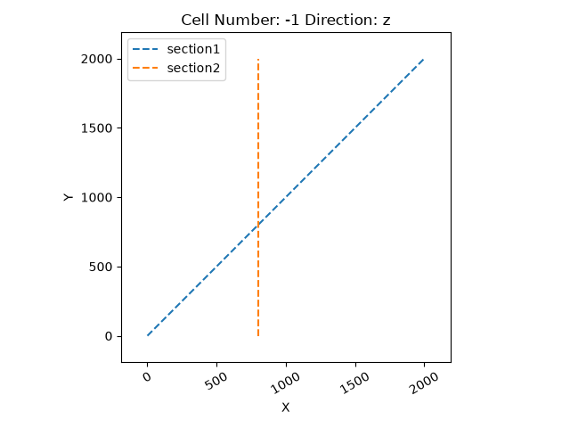
<function plot_section_traces at 0x7f3efa82a980>
Computing the model¶
With the topography and section grids registered above, compute_model
interpolates values across the regular grid and both of them in one call:
Setting Backend To: AvailableBackends.PYTORCH
GPU enabled. Using device: cuda
GPU device count: 1
Current GPU device: 0
Chunking done: 9 chunks
Chunking done: 50 chunks
Plotting a single section¶
plot_2d can plot an orthogonal cut through the model: a single X, Y,
or Z slice through the regular grid. Pass a cardinal direction and
where along it to cut – either cell_number (an integer index into
the grid’s resolution) or the string 'mid' for the middle of the
model:
gpv.plot_2d(geo_model, direction=['y'], cell_number=['mid'], show_boundaries=False)
<gempy_viewer.modules.plot_2d.visualization_2d.Plot2D object at 0x7f3e54735650>
position is usually more convenient than cell_number: it takes a
real-world coordinate instead of a raw grid index, which gets awkward to
reason about once refinement – rather than an explicit
resolution – determines the grid’s actual resolution. The plot
below cuts at the same place as cell_number='mid' above (Y = 1000,
the midpoint of this model’s 0-2000 extent), specified directly instead:
gpv.plot_2d(geo_model, direction=['y'], position=[1000], show_boundaries=False)
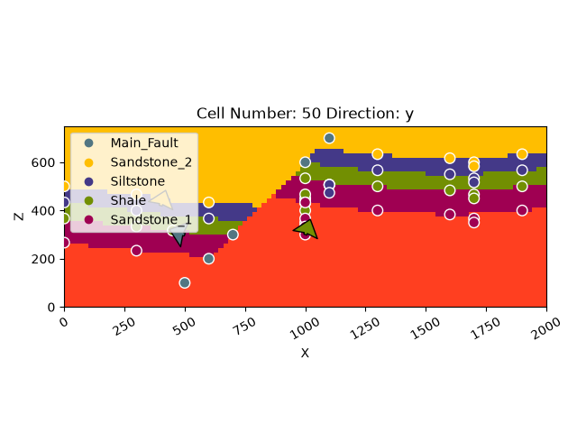
<gempy_viewer.modules.plot_2d.visualization_2d.Plot2D object at 0x7f3eea7fdbd0>
Passing show_topography=True overlays the section with its
topography: the area above the actual ground surface is masked out in
black, instead of showing lithology that doesn’t really exist there.
This works the same way for any direction, including a horizontal
('z') cut, where it masks based on the full topography surface
rather than a single profile line:
gpv.plot_2d(geo_model, direction=['y'], cell_number=['mid'], show_topography=True, show_boundaries=False)
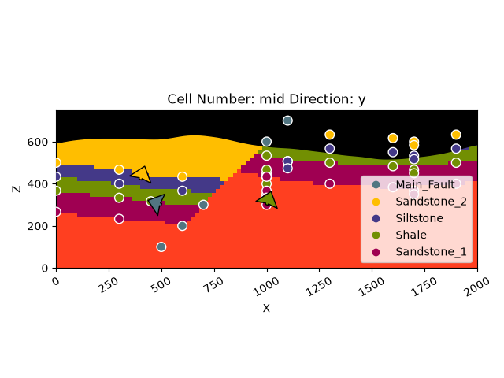
<gempy_viewer.modules.plot_2d.visualization_2d.Plot2D object at 0x7f3eea19f3d0>
Scalar field¶
gempy solves a separate implicit scalar field per structural series –
not a single field for the whole model – so series_n selects which
one to plot, 0-indexed in the order the series were passed to
map_stack_to_surfaces. This model has two: series 0 is
Fault_Series (just the fault surface, a fairly plain field on its
own) and series 1 is Strat_Series (the four stratigraphic layers),
which is the more interesting one to look at since it visibly folds
across the fault. Set show_scalar=True to plot a series’ scalar
field, and show_lith=False to drop the lithology block underneath it
so only the scalar field itself shows:
gpv.plot_2d(
geo_model,
direction=['y'],
cell_number=['mid'],
show_scalar=True,
series_n=1,
show_boundaries=False,
show_lith=False
)
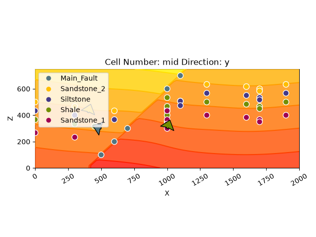
<gempy_viewer.modules.plot_2d.visualization_2d.Plot2D object at 0x7f3eea219250>
Contact lines only¶
Set show_lith=False and show_boundaries=True to plot just the
surface-contact isolines of the same section – the outlines where one
lithology ends and the next begins – without the lithology fill:
gpv.plot_2d(geo_model, direction=['y'], cell_number=['mid'], show_lith=False, show_boundaries=True)
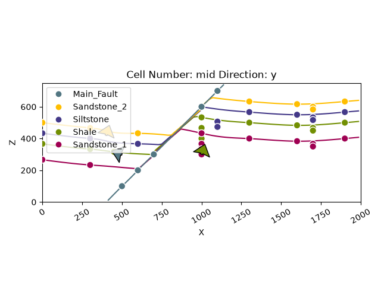
<gempy_viewer.modules.plot_2d.visualization_2d.Plot2D object at 0x7f3eea19f3d0>
Custom sections and topography¶
Named sections and the special section name 'topography' (a
geological-map view) work exactly the same way as an orthogonal cut –
the same show_lith/show_scalar/show_boundaries options all
apply, just addressed via section_names instead of direction +
cell_number/position:
gpv.plot_2d(geo_model, section_names=['section1'], show_boundaries=False)
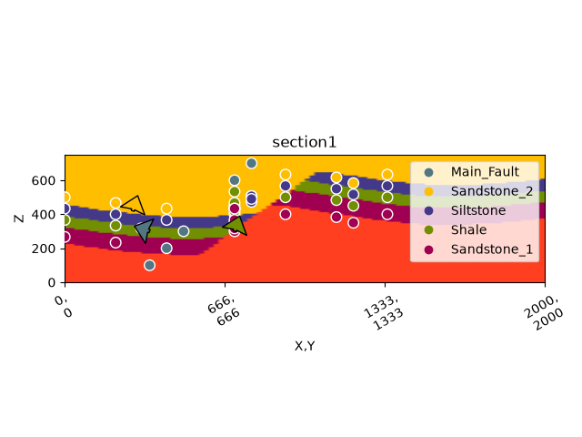
<gempy_viewer.modules.plot_2d.visualization_2d.Plot2D object at 0x7f3eea1a6bd0>
gpv.plot_2d(geo_model, section_names=['topography'], show_boundaries=False)
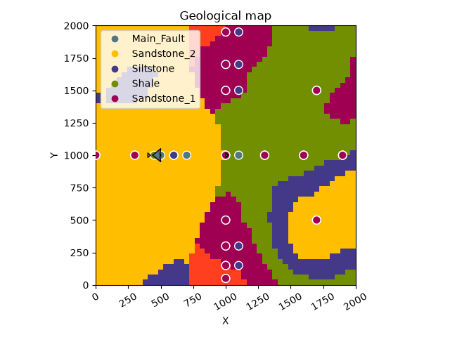
<gempy_viewer.modules.plot_2d.visualization_2d.Plot2D object at 0x7f3eea22df50>
Combining multiple plots in one figure¶
Passing several section_names and/or directions in one call builds a
single figure with a subplot grid automatically, and every show_*
flag also accepts a list, one entry per axis – so one figure can show
all of the above side by side. Here: a named section, the geological
map, a plain orthogonal section, and that same cut as a scalar field:
gpv.plot_2d(
geo_model,
section_names=['section1', 'topography'],
direction=['y', 'y'],
cell_number=['mid', 'mid'],
show_lith=[True, True, True, False],
show_boundaries=[False, False, False, False],
show_scalar=[False, False, False, True]
)
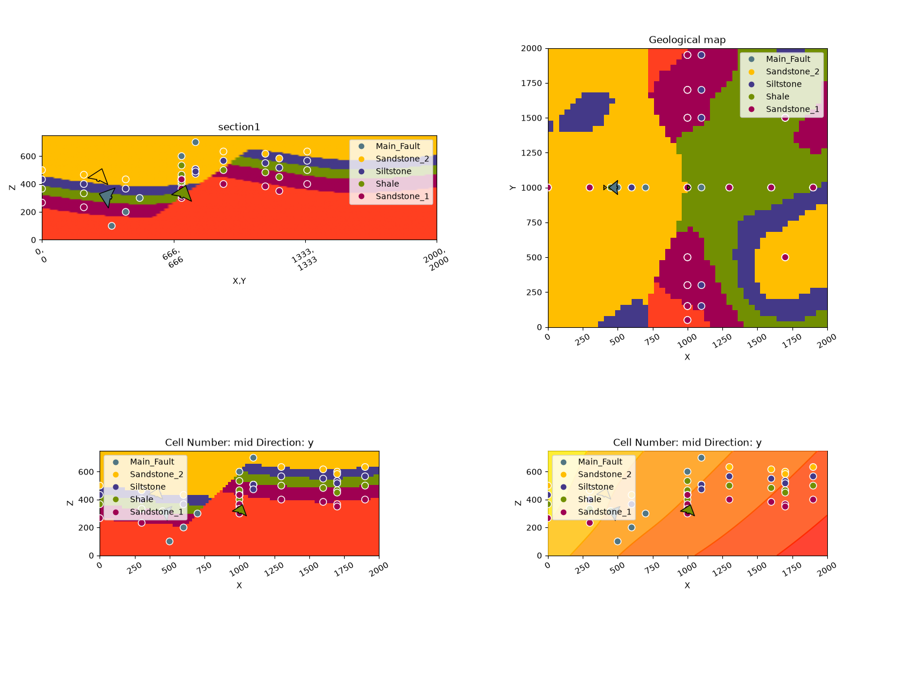
<gempy_viewer.modules.plot_2d.visualization_2d.Plot2D object at 0x7f3e459c0950>
Vertical exaggeration¶
ve rescales the vertical axis of a plot and is a thin wrapper around
matplotlib’s ax.set_aspect:
gpv.plot_2d(geo_model, section_names=['section1'], ve=1.5, show_boundaries=False)
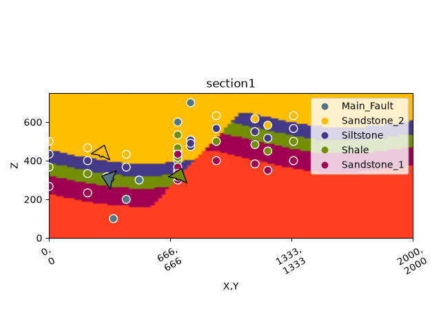
<gempy_viewer.modules.plot_2d.visualization_2d.Plot2D object at 0x7f3eea1fa550>
Overlaying custom data: boreholes on a section¶
Orthogonal cuts plot directly in world X/Y/Z coordinates, so overlaying
a borehole there is a plain ax.plot call. Named sections are
different: their horizontal axis is distance along the section line,
not world coordinates, so a world point has to be projected onto it
first.
For the orthogonal case, no coordinate transform is needed – each
borehole’s world X position is plotted directly against depth. All three
start at the model’s top (extent[5]) and reach different depths:
z_top = geo_model.grid.regular_grid.extent[5]
boreholes_ortho = [
{'name': 'Borehole A', 'x': 400, 'z_bottom': 500, 'color': 'black'},
{'name': 'Borehole B', 'x': 1000, 'z_bottom': 100, 'color': 'firebrick'},
{'name': 'Borehole C', 'x': 1600, 'z_bottom': 300, 'color': 'darkblue'},
]
p_ortho = gpv.plot_2d(geo_model, direction=['y'], cell_number=['mid'], show_boundaries=False, show=False)
ax_ortho = p_ortho.axes[0]
for bh in boreholes_ortho:
ax_ortho.plot([bh['x'], bh['x']], [bh['z_bottom'], z_top], color=bh['color'], linewidth=3, label=bh['name'])
ax_ortho.scatter([bh['x']], [z_top], color=bh['color'], zorder=10)
ax_ortho.legend()
plt.show()
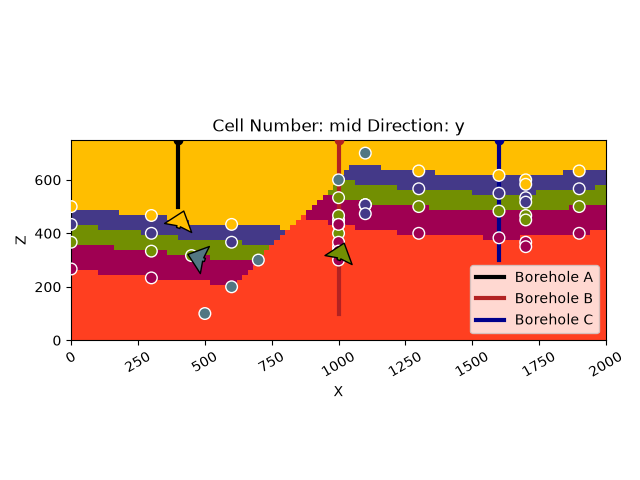
For a named section, each borehole’s (x, y) collar first needs to be
projected onto the section’s start -> stop line to get its position
along the section axis; depth (z) still plots directly. start
and stop are stored per section in grid.sections.df:
section_name = 'section1'
sections_df = geo_model.grid.sections.df
start = np.array(sections_df.loc[section_name, 'start'], dtype=float)
stop = np.array(sections_df.loc[section_name, 'stop'], dtype=float)
u_hat = (stop - start) / np.linalg.norm(stop - start)
def project_onto_section(point_xy, start, u_hat):
return np.dot(np.asarray(point_xy, dtype=float) - start, u_hat)
boreholes_section = [
{'name': 'Borehole A', 'xy': [400, 400], 'z_bottom': 500, 'color': 'black'},
{'name': 'Borehole B', 'xy': [1000, 1000], 'z_bottom': 100, 'color': 'firebrick'},
{'name': 'Borehole C', 'xy': [1600, 1600], 'z_bottom': 300, 'color': 'darkblue'},
]
p_section = gpv.plot_2d(geo_model, section_names=[section_name], show_boundaries=False, show=False)
ax_section = p_section.axes[0]
for bh in boreholes_section:
u = project_onto_section(bh['xy'], start, u_hat)
ax_section.plot([u, u], [bh['z_bottom'], z_top], color=bh['color'], linewidth=3, label=bh['name'])
ax_section.scatter([u], [z_top], color=bh['color'], zorder=10)
ax_section.legend()
plt.show()
# sphinx_gallery_thumbnail_number = -1
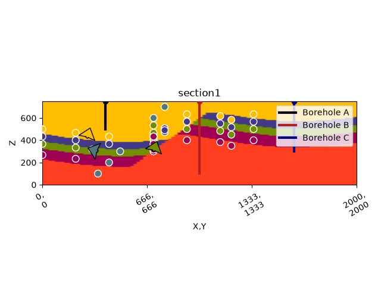
Total running time of the script: (0 minutes 3.568 seconds)